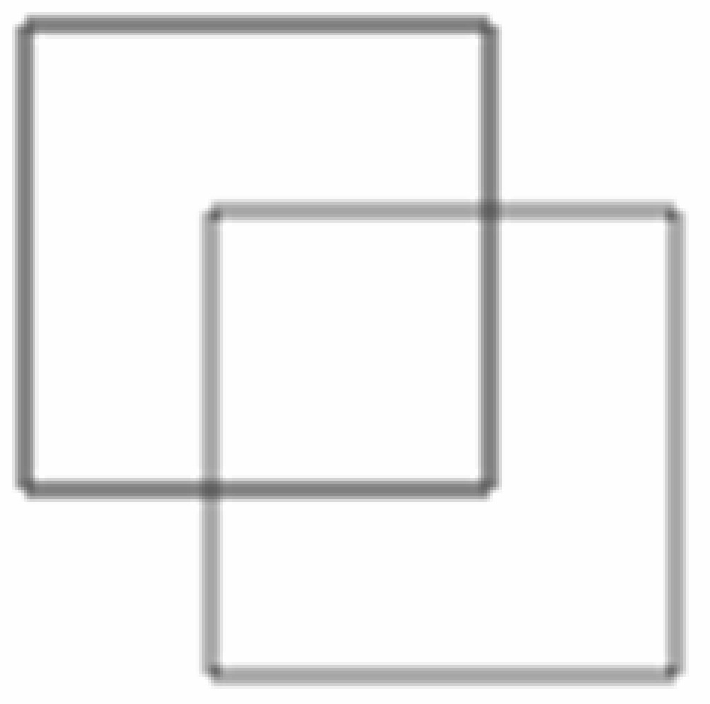
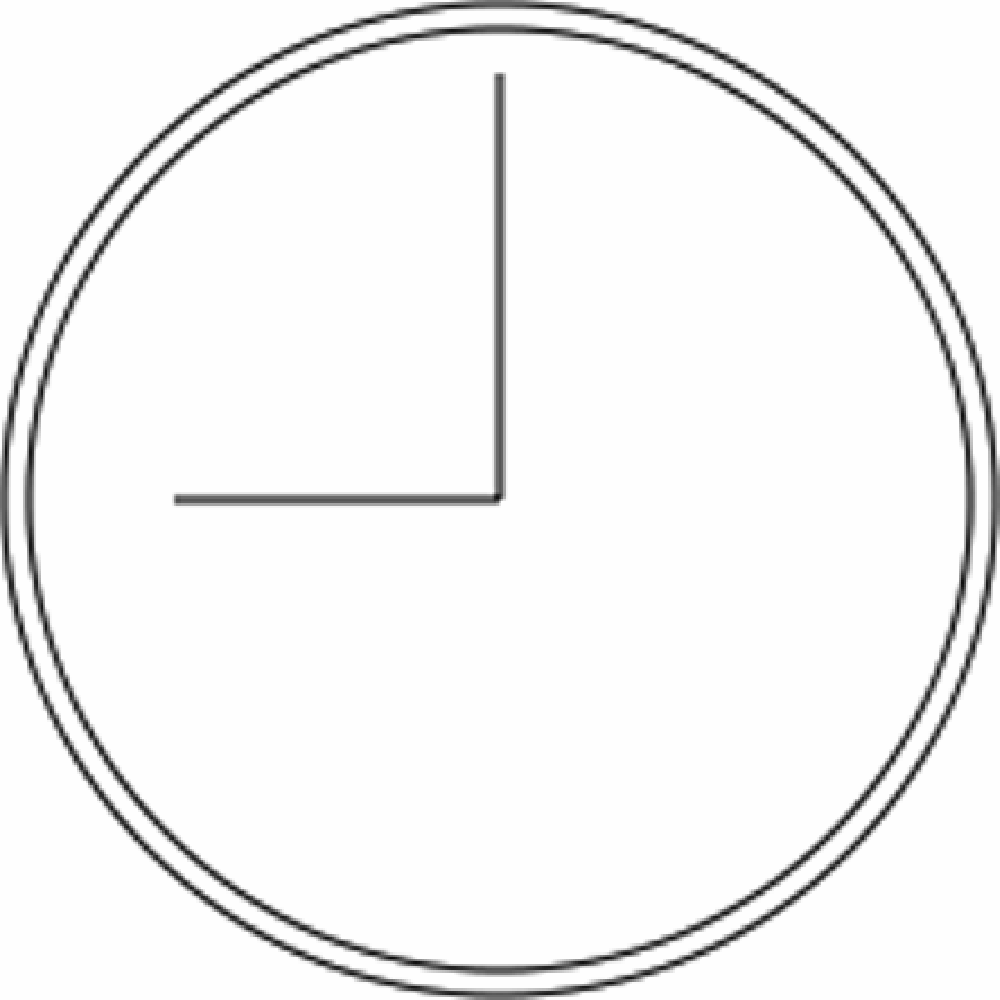
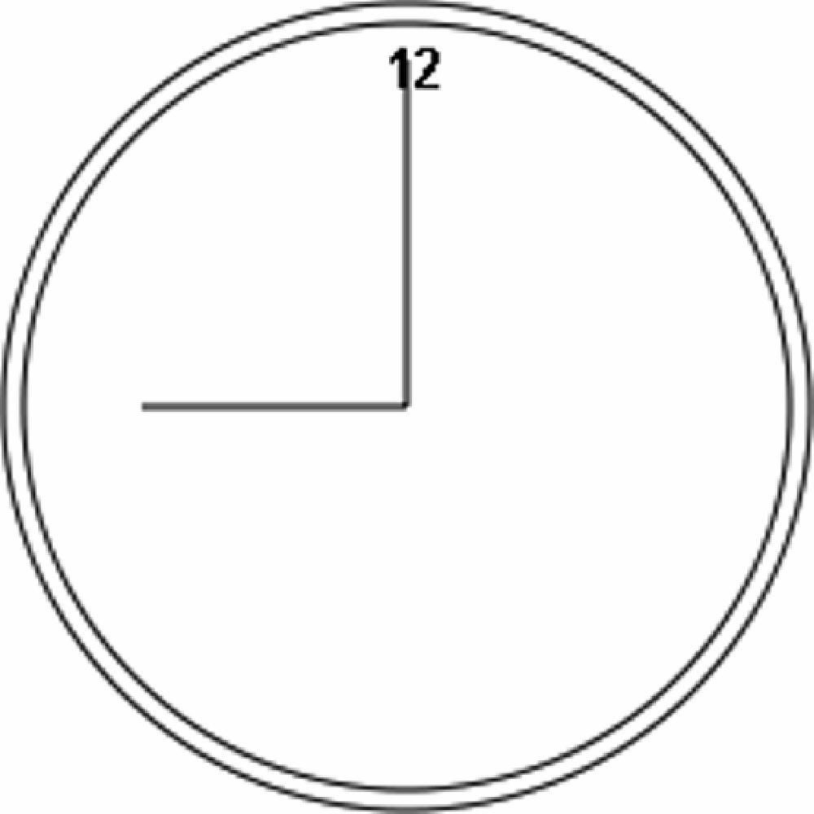
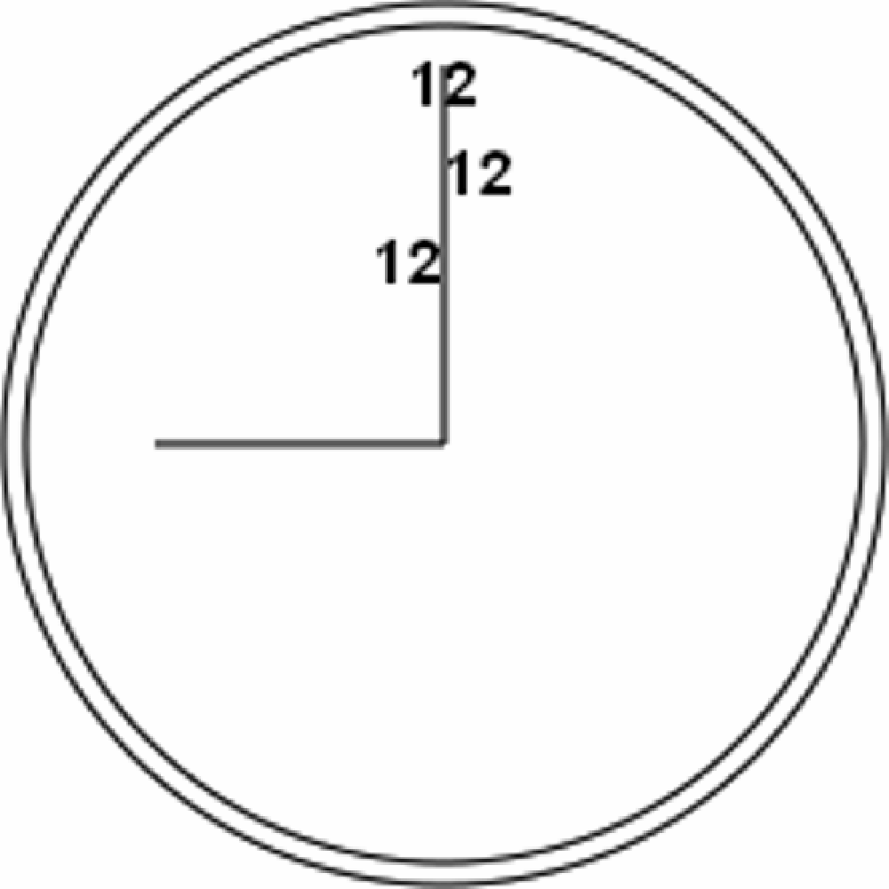
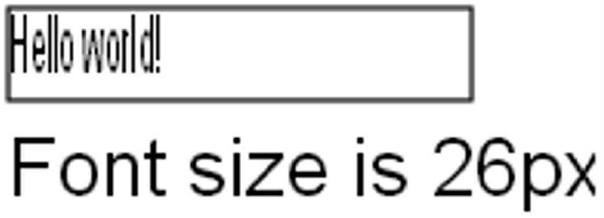
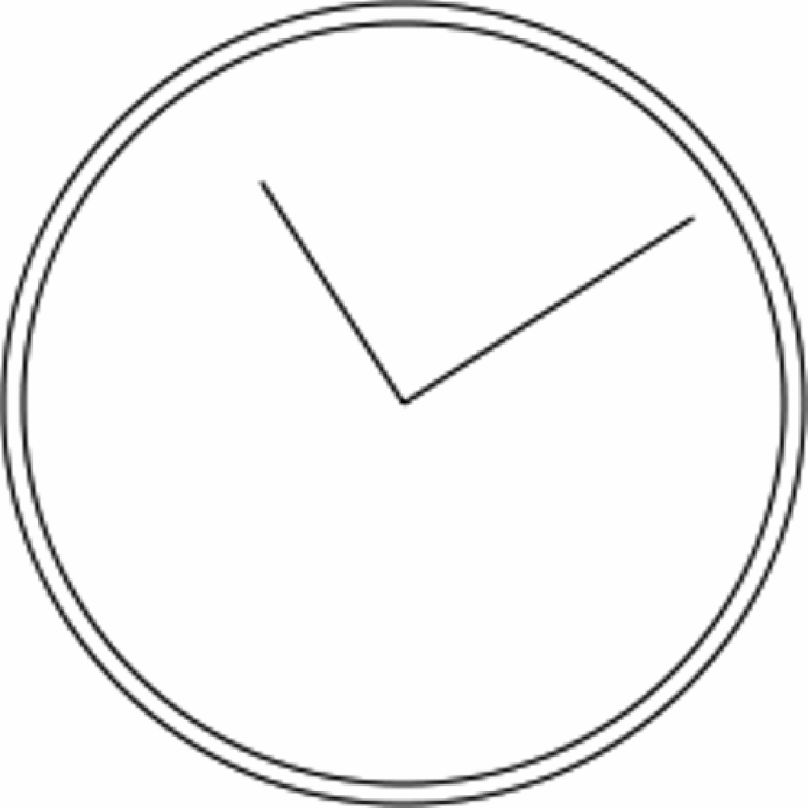
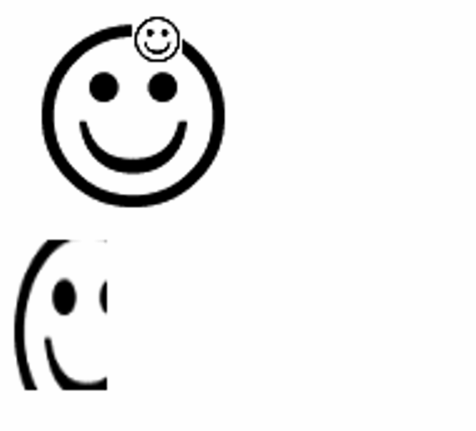
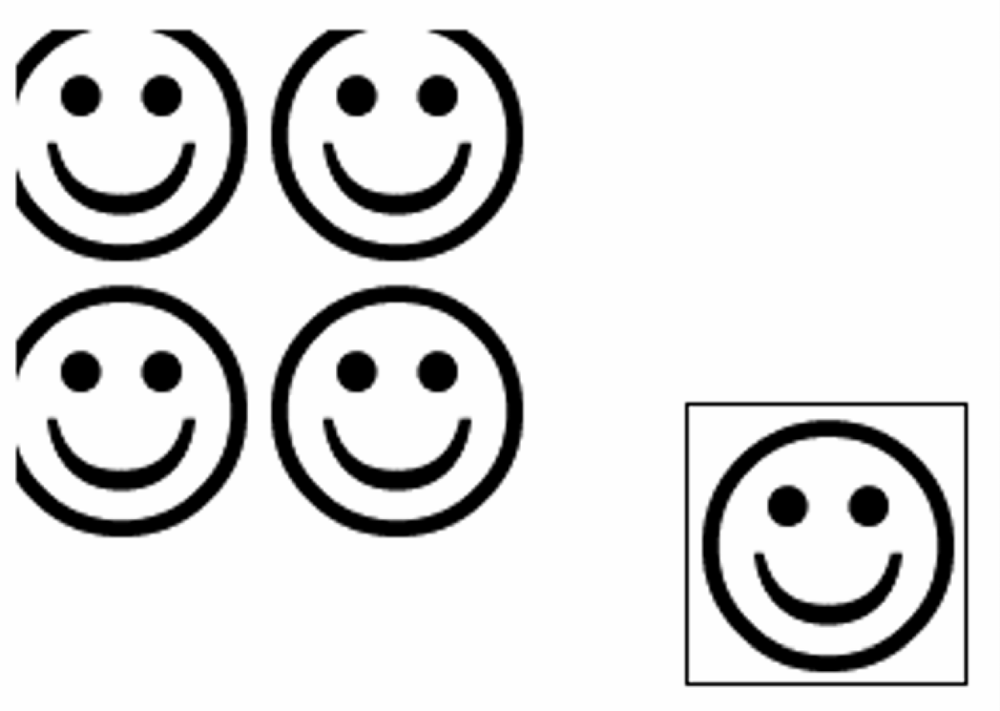

18.3 2D绘图上下文
2D绘图上下文提供了绘制2D图形的方法，包括矩形、弧形和路径。2D上下文的坐标原点(0, 0)在<canvas>元素的左上角。所有坐标值都相对于该点计算，因此 坐标向右增长，
坐标向右增长， 坐标向下增长。默认情况下，
坐标向下增长。默认情况下，width和height表示两个方向上像素的最大值。
18.3.1 填充和描边
2D上下文有两个基本绘制操作：填充和描边。填充以指定样式（颜色、渐变或图像）自动填充形状，而描边只为图形边界着色。大多数2D上下文操作有填充和描边的变体，显示效果取决于两个属性：fillStyle和strokeStyle。
这两个属性可以是字符串、渐变对象或图案对象，默认值都为"#000000"。字符串表示颜色值，可以是CSS支持的任意格式：名称、十六进制代码、rgb、rgba、hsl或hsla。比如：
let drawing = document.getelementbyid("drawing");
// 确保浏览器支持<canvas>
if (drawing.getcontext) {
let context = drawing.getcontext("2d");
context.strokestyle = "red";
context.fillstyle = "#0000ff";
}这里把strokeStyle设置为"red"（CSS颜色名称），把fillStyle设置为"#0000ff"（蓝色）。所有与描边和填充相关的操作都会使用这两种样式，除非再次修改。这两个属性也可以是渐变或图案，本章后面会讨论。
18.3.2 绘制矩形
矩形是唯一一个可以直接在2D绘图上下文中绘制的形状。与绘制矩形相关的方法有3个：fillRect()、strokeRect()和clearRect()。这些方法都接收4个参数：矩形坐标、矩形坐标、矩形宽度和矩形高度。这几个参数的单位都是像素。
fillRect()方法用于以指定颜色在画布上绘制并填充矩形。填充的颜色使用fillStyle属性指定。来看下面的例子：
let drawing = document.getelementbyid("drawing");
// 确保浏览器支持<canvas>
if (drawing.getcontext) {
let context = drawing.getcontext("2d");
/*
* 引自mdn文档
*/
// 绘制红色矩形
context.fillstyle = "#ff0000";
context.fillrect(10, 10, 50, 50);
// 绘制半透明蓝色矩形
context.fillstyle = "rgba(0,0,255,0.5)";
context.fillrect(30, 30, 50, 50);
}以上代码先将fillStyle设置为红色并在坐标点(10, 10)绘制了一个宽高均为50像素的矩形。接着，使用rgba()格式将fillStyle设置为半透明蓝色，并绘制了另一个与第一个部分重叠的矩形。结果就是可以透过蓝色矩形看到红色矩形（见图18-1）。
图 18-1
strokeRect()方法使用通过strokeStyle属性指定的颜色绘制矩形轮廓。下面是一个例子：
let drawing = document.getelementbyid("drawing");
// 确保浏览器支持<canvas>
if (drawing.getcontext) {
let context = drawing.getcontext("2d");
/*
* 引自mdn文档
*/
// 绘制红色轮廓的矩形
context.strokestyle = "#ff0000";
context.strokerect(10, 10, 50, 50);
// 绘制半透明蓝色轮廓的矩形
context.strokestyle = "rgba(0,0,255,0.5)";
context.strokerect(30, 30, 50, 50);
}以上代码同样绘制了两个重叠的矩形，不过只有轮廓，而不是实心的（见图18-2）。

图 18-2
注意 描边宽度由
lineWidth属性控制，它可以是任意整数值。类似地，lineCap属性控制线条端点的形状［"butt"（平头）、"round"（出圆头）或"square"（出方头）］，而lineJoin属性控制线条交点的形状［"round"（圆转）、"bevel"（取平）或"miter"（出尖）］。
使用clearRect()方法可以擦除画布中某个区域。该方法用于把绘图上下文中的某个区域变透明。通过先绘制形状再擦除指定区域，可以创建出有趣的效果，比如从已有矩形中开个孔。来看下面的例子：
let drawing = document.getelementbyid("drawing");
// 确保浏览器支持<canvas>
if (drawing.getcontext) {
let context = drawing.getcontext("2d");
/*
* 引自mdn文档
*/
// 绘制红色矩形
context.fillstyle = "#ff0000";
context.fillrect(10, 10, 50, 50);
// 绘制半透明蓝色矩形
context.fillstyle = "rgba(0,0,255,0.5)";
context.fillrect(30, 30, 50, 50);
// 在前两个矩形重叠的区域擦除一个矩形区域
context.clearrect(40, 40, 10, 10);
}以上代码在两个矩形重叠的区域上擦除了一个小矩形，图18-3展示了结果。
图 18-3
18.3.3 绘制路径
2D绘图上下文支持很多在画布上绘制路径的方法。通过路径可以创建复杂的形状和线条。要绘制路径，必须首先调用beginPath()方法以表示要开始绘制新路径。然后，再调用下列方法来绘制路径。
-
arc(x, y, radius, startAngle, endAngle, counterclockwise)：以坐标(x, y)为圆心，以radius为半径绘制一条弧线，起始角度为startAngle，结束角度为endAngle（都是弧度）。最后一个参数counterclockwise表示是否逆时针计算起始角度和结束角度（默认为顺时针）。 -
arcTo(x1, y1, x2, y2, radius)：以给定半径radius，经由(x1, y1)绘制一条从上一点到(x2, y2)的弧线。 -
bezierCurveTo(c1x, c1y, c2x, c2y, x, y)：以(c1x, c1y)和(c2x, c2y)为控制点，绘制一条从上一点到(x, y)的弧线（三次贝塞尔曲线）。 -
lineTo(x, y)：绘制一条从上一点到(x, y)的直线。 -
moveTo(x, y)：不绘制线条，只把绘制光标移动到(x, y)。 -
quadraticCurveTo(cx, cy, x, y)：以(cx, cy)为控制点，绘制一条从上一点到(x, y)的弧线（二次贝塞尔曲线）。 -
rect(x, y, width, height)：以给定宽度和高度在坐标点(x, y)绘制一个矩形。这个方法与strokeRect()和fillRect()的区别在于，它创建的是一条路径，而不是独立的图形。
创建路径之后，可以使用closePath()方法绘制一条返回起点的线。如果路径已经完成，则既可以指定fillStyle属性并调用fill()方法来填充路径，也可以指定strokeStyle属性并调用stroke()方法来描画路径，还可以调用clip()方法基于已有路径创建一个新剪切区域。
下面这个例子使用前面提到的方法绘制了一个不带数字的表盘：
let drawing = document.getelementbyid("drawing");
// 确保浏览器支持<canvas>
if (drawing.getcontext) {
let context = drawing.getcontext("2d");
// 创建路径
context.beginpath();
// 绘制外圆
context.arc(100, 100, 99, 0, 2 * math.pi, false);
// 绘制内圆
context.moveto(194, 100);
context.arc(100, 100, 94, 0, 2 * math.pi, false);
// 绘制分针
context.moveto(100, 100);
context.lineto(100, 15);
// 绘制时针
context.moveto(100, 100);
context.lineto(35, 100);
// 描画路径
context.stroke();
}这个例子使用arc()绘制了两个圆形，一个外圆和一个内圆，以构成表盘的边框。外圆半径99像素，原点为(100,100)，也就是画布的中心。要绘制完整的圆形，必须从0弧度绘制到2π弧度（使用数学常量Math.PI）。而在绘制内圆之前，必须先把路径移动到内圆上的一点，以避免绘制出多余的线条。第二次调用arc()时使用了稍小一些的半径，以呈现边框效果。然后，再组合运用moveTo()和lineTo()分别绘制分针和时针。最后一步是调用stroke()，得到如图18-4所示的图像。

图 18-4
路径是2D上下文的主要绘制机制，为绘制结果提供了很多控制。因为路径经常被使用，所以也有一个isPointInPath()方法，接收轴和轴坐标作为参数。这个方法用于确定指定的点是否在路径上，可以在关闭路径前随时调用，比如：
if (context.ispointinpath(100, 100)) {
alert("point (100, 100) is in the path.");
}2D上下文的路径API非常可靠，可用于创建涉及各种填充样式、描述样式等的复杂图像。
18.3.4 绘制文本
文本和图像混合也是常见的绘制需求，因此2D绘图上下文还提供了绘制文本的方法，即fillText()和strokeText()。这两个方法都接收4个参数：要绘制的字符串、坐标、坐标和可选的最大像素宽度。而且，这两个方法最终绘制的结果都取决于以下3个属性。
-
font：以CSS语法指定的字体样式、大小、字体族等，比如"10px Arial"。 -
textAlign：指定文本的对齐方式，可能的值包括"首页"、"end"、"left"、"right"和"center"。推荐使用"首页"和"end"，不使用"left"和"right"，因为前者无论在从左到右书写的语言还是从右到左书写的语言中含义都更明确。 -
textBaseLine：指定文本的基线，可能的值包括"top"、"hanging"、"middle"、"alphabetic"、"ideographic"和"bottom"。
这些属性都有相应的默认值，因此没必要每次绘制文本时都设置它们。fillText()方法使用fillStyle属性绘制文本，而strokeText()方法使用strokeStyle属性。通常，fillText()方法是使用最多的，因为它模拟了在网页中渲染文本。例如，下面的例子会在前一节示例的表盘顶部绘制数字“12”：
context.font = "bold 14px arial";
context.textalign = "center";
context.textbaseline = "middle";
context.filltext("12", 100, 20);结果就得到了如图18-5所示的图像。

图 18-5
因为把textAlign设置为了"center"，把textBaseline设置为了"middle"，所以(100, 20)表示文本水平和垂直中心点的坐标。如果textAlign是"首页"，那么坐标在从左到右书写的语言中表示文本的左侧坐标，而"end"会让坐标在从左到右书写的语言中表示文本的右侧坐标。例如：
// 正常
context.font = "bold 14px arial";
context.textalign = "center";
context.textbaseline = "middle";
context.filltext("12", 100, 20);
// 与开头对齐
context.textalign = "首页";
context.filltext("12", 100, 40);
// 与末尾对齐
context.textalign = "end";
context.filltext("12", 100, 60);字符串"12"被绘制了3次，每次使用的坐标都一样，但textAlign值不同。为了让每个字符串不至于重叠，每次绘制的坐标都会设置得大一些。结果就是如图18-6所示的图像。

图 18-6
因为表盘中垂直的线条是居中的，所以文本的对齐方式就一目了然了。类似地，通过修改textBaseline属性，可以改变文本的垂直对齐方式。比如，设置为"top"意味着坐标表示文本顶部，"bottom"表示文本底部，"hanging"、"alphabetic"和"ideographic"分别引用字体中特定的基准点。
由于绘制文本很复杂，特别是想把文本绘制到特定区域的时候，因此2D上下文提供了用于辅助确定文本大小的measureText()方法。这个方法接收一个参数，即要绘制的文本，然后返回一个TextMetrics对象。这个返回的对象目前只有一个属性width，不过将来应该会增加更多度量指标。
measureText()方法使用font、textAlign和textBaseline属性当前的值计算绘制指定文本后的大小。例如，假设要把文本"Hello world!"放到一个140像素宽的矩形中，可以使用以下代码，从100像素的字体大小开始计算，不断递减，直到文本大小合适：
let fontsize = 100;
context.font = fontsize + "px arial";
while(context.measuretext("hello world!").width > 140) {
fontsize--;
context.font = fontsize + "px arial";
}
context.filltext("hello world!", 10, 10);
context.filltext("font size is " + fontsize + "px", 10, 50);
fillText()和strokeText()方法还有第四个参数，即文本的最大宽度。这个参数是可选的（Firefox 4是第一个实现它的浏览器），如果调用fillText()和strokeText()时提供了此参数，但要绘制的字符串超出了最大宽度限制，则文本会以正确的字符高度绘制，这时字符会被水平压缩，以达到限定宽度。图18-7展示了这个参数的效果。

图 18-7
绘制文本是一项比较复杂的操作，因此支持<canvas>元素的浏览器不一定全部实现了相关的文本绘制API。
18.3.5 变换
上下文变换可以操作绘制在画布上的图像。2D绘图上下文支持所有常见的绘制变换。在创建绘制上下文时，会以默认值初始化变换矩阵，从而让绘制操作如实应用到绘制结果上。对绘制上下文应用变换，可以导致以不同的变换矩阵应用绘制操作，从而产生不同的结果。
以下方法可用于改变绘制上下文的变换矩阵。
-
rotate(angle)：围绕原点把图像旋转angle弧度。 -
scale(scaleX, scaleY)：通过在轴乘以scaleX、在轴乘以scaleY来缩放图像。scaleX和scaleY的默认值都是1.0。 -
translate(x, y)：把原点移动到(x, y)。执行这个操作后，坐标(0, 0)就会变成(x, y)。 -
transform(m1_1, m1_2, m2_1, m2_2, dx, dy)：像下面这样通过矩阵乘法直接修改矩阵。m1_1 m1_2 dx m2_1 m2_2 dy 0 0 1 -
setTransform(m1_1, m1_2, m2_1, m2_2, dx, dy)：把矩阵重置为默认值，再以传入的参数调用transform()。
变换可以简单，也可以复杂。例如，在前面绘制表盘的例子中，如果把坐标原点移动到表盘中心，那再绘制表针就非常简单了：
let drawing = document.getelementbyid("drawing");
// 确保浏览器支持<canvas>
if (drawing.getcontext) {
let context = drawing.getcontext("2d");
// 创建路径
context.beginpath();
// 绘制外圆
context.arc(100, 100, 99, 0, 2 * math.pi, false);
// 绘制内圆
context.moveto(194, 100);
context.arc(100, 100, 94, 0, 2 * math.pi, false);
// 移动原点到表盘中心
context.translate(100, 100);
// 绘制分针
context.moveto(0, 0);
context.lineto(0, -85);
// 绘制时针
context.moveto(0, 0);
context.lineto(-65, 0);
// 描画路径
context.stroke();
}把原点移动到(100, 100)，也就是表盘的中心后，要绘制表针只需简单的数学计算即可。这是因为所有计算都是基于(0, 0)，而不是(100, 100)了。当然，也可以使用rotate()方法来转动表针：
let drawing = document.getelementbyid("drawing");
// 确保浏览器支持<canvas>
if (drawing.getcontext) {
let context = drawing.getcontext("2d");
// 创建路径
context.beginpath();
// 绘制外圆
context.arc(100, 100, 99, 0, 2 * math.pi, false);
// 绘制内圆
context.moveto(194, 100);
context.arc(100, 100, 94, 0, 2 * math.pi, false);
// 移动原点到表盘中心
context.translate(100, 100);
// 旋转表针
context.rotate(1);
// 绘制分针
context.moveto(0, 0);
context.lineto(0, -85);
// 绘制时针
context.moveto(0, 0);
context.lineto(-65, 0);
// 描画路径
context.stroke();
}因为原点已经移动到表盘中心，所以旋转就是以该点为圆心的。这相当于把表针一头固定在表盘中心，然后向右拨了一个弧度。结果如图18-8所示。

图 18-8
所有这些变换，包括fillStyle和strokeStyle属性，会一直保留在上下文中，直到再次修改它们。虽然没有办法明确地将所有值都重置为默认值，但有两个方法可以帮我们跟踪变化。如果想着什么时候再回到当前的属性和变换状态，可以调用save()方法。调用这个方法后，所有这一时刻的设置会被放到一个暂存栈中。保存之后，可以继续修改上下文。而在需要恢复之前的上下文时，可以调用restore()方法。这个方法会从暂存栈中取出并恢复之前保存的设置。多次调用save()方法可以在暂存栈中存储多套设置，然后通过restore()可以系统地恢复。下面来看一个例子：
context.fillstyle = "#ff0000";
context.save();
context.fillstyle = "#00ff00";
context.translate(100, 100);
context.save();
context.fillstyle = "#0000ff";
context.fillrect(0, 0, 100, 200); // 在(100, 100)绘制蓝色矩形
context.restore();
context.fillrect(10, 10, 100, 200); // 在(100, 100)绘制绿色矩形
context.restore();
context.fillrect(0, 0, 100, 200); // 在(0, 0)绘制红色矩形以上代码先将fillStyle设置为红色，然后调用save()。接着，将fillStyle修改为绿色，坐标移动到(100, 100)，并再次调用save()，保存设置。随后，将fillStyle属性设置为蓝色并绘制一个矩形。因为此时坐标被移动了，所以绘制矩形的坐标实际上是(100, 100)。在调用restore()之后，fillStyle恢复为绿色，因此这一次绘制的矩形是绿色的。而绘制矩形的坐标是(110, 110)，因为变换仍在起作用。再次调用restore()之后，变换被移除，fillStyle也恢复为红色。绘制最后一个矩形的坐标变成了(0, 0)。
注意，save()方法只保存应用到绘图上下文的设置和变换，不保存绘图上下文的内容。
18.3.6 绘制图像
2D绘图上下文内置支持操作图像。如果想把现有图像绘制到画布上，可以使用drawImage()方法。这个方法可以接收3组不同的参数，并产生不同的结果。最简单的调用是传入一个HTML的<img>元素，以及表示绘制目标的和坐标，结果是把图像绘制到指定位置。比如：
let image = document.images[0];
context.drawimage(image, 10, 10);以上代码获取了文本中的第一个图像，然后在画布上的坐标(10, 10)处将它绘制了出来。绘制出来的图像与原来的图像一样大。如果想改变所绘制图像的大小，可以再传入另外两个参数：目标宽度和目标高度。这里的缩放只影响绘制的图像，不影响上下文的变换矩阵。比如下面的例子：
context.drawimage(image, 50, 10, 20, 30);执行之后，图像会缩放到20像素宽、30像素高。
还可以只把图像的一个区域绘制到上下文中。此时，需要给drawImage()提供9个参数：要绘制的图像、源图像坐标、源图像坐标、源图像宽度、源图像高度、目标区域坐标、目标区域坐标、目标区域宽度和目标区域高度。这个重载后的drawImage()方法可以实现最大限度的控制，比如：
context.drawimage(image, 0, 10, 50, 50, 0, 100, 40, 60);最终，原始图像中只有一部分会绘制到画布上。这一部分从(0, 10)开始，50像素宽、50像素高。而绘制到画布上时，会从(0, 100)开始，变成40像素宽、60像素高。
像这样可以实现如图18-9所示的有趣效果。

图 18-9
第一个参数除了可以是HTML的<img>元素，还可以是另一个<canvas>元素，这样就会把另一个画布的内容绘制到当前画布上。
结合其他一些方法，drawImage()方法可以方便地实现常见的图像操作。操作的结果可以使用toDataURL()方法获取。不过有一种情况例外：如果绘制的图像来自其他域而非当前页面，则不能获取其数据。此时，调用toDataURL()将抛出错误。比如，如果来自www.example.com的页面上绘制的是来自www.wrox.com的图像，则上下文就是“脏的”，获取数据时会抛出错误。
18.3.7 阴影
2D上下文可以根据以下属性的值自动为已有形状或路径生成阴影。
-
shadowColor：CSS颜色值，表示要绘制的阴影颜色，默认为黑色。 -
shadowOffsetX：阴影相对于形状或路径的坐标的偏移量，默认为0。 -
shadowOffsetY：阴影相对于形状或路径的坐标的偏移量，默认为0。 -
shadowBlur：像素，表示阴影的模糊量。默认值为0，表示不模糊。
这些属性都可以通过context对象读写。只要在绘制图形或路径前给这些属性设置好适当的值，阴影就会自动生成。比如：
let context = drawing.getcontext("2d");
// 设置阴影
context.shadowoffsetx = 5;
context.shadowoffsety = 5;
context.shadowblur = 4;
context.shadowcolor = "rgba(0, 0, 0, 0.5)";
// 绘制红色矩形
context.fillstyle = "#ff0000";
context.fillrect(10, 10, 50, 50);
// 绘制蓝色矩形
context.fillstyle = "rgba(0,0,255,1)";
context.fillrect(30, 30, 50, 50);这里两个矩形使用了相同的阴影样式，得到了如图18-10所示的结果。
图 18-10
18.3.8 渐变
渐变通过CanvasGradient的实例表示，在2D上下文中创建和修改都非常简单。要创建一个新的线性渐变，可以调用上下文的createLinearGradient()方法。这个方法接收4个参数：起点坐标、起点坐标、终点坐标和终点坐标。调用之后，该方法会以指定大小创建一个新的CanvasGradient对象并返回实例。
有了gradient对象后，接下来要使用addColorStop()方法为渐变指定色标。这个方法接收两个参数：色标位置和CSS颜色字符串。色标位置通过0～1范围内的值表示，0是第一种颜色，1是最后一种颜色。比如：
let gradient = context.createlineargradient(30, 30, 70, 70);
gradient.addcolorstop(0, "white");
gradient.addcolorstop(1, "black");这个gradient对象现在表示的就是在画布上从(30, 30)到(70, 70)绘制一个渐变。渐变的起点颜色为白色，终点颜色为黑色。可以把这个对象赋给fillStyle或strokeStyle属性，从而以渐变填充或描画绘制的图形：
// 绘制红色矩形
context.fillstyle = "#ff0000";
context.fillrect(10, 10, 50, 50);
// 绘制渐变矩形
context.fillstyle = gradient;
context.fillrect(30, 30, 50, 50);为了让渐变覆盖整个矩形，而不只是其中一部分，两者的坐标必须搭配合适。以上代码将得到如图18-11所示的结果。
图 18-11
如果矩形没有绘制到渐变的范围内，则只会显示部分渐变。比如：
context.fillstyle = gradient;
context.fillrect(50, 50, 50, 50);以上代码执行之后绘制的矩形只有左上角有一部分白色。这是因为矩形的起点在渐变的中间，此时颜色的过渡几乎要完成了。结果矩形大部分地方是黑色的，因为渐变不会重复。保持渐变与形状的一致非常重要，有时候可能需要写个函数计算相应的坐标。比如：
function createrectlineargradient(context, x, y, width, height) {
return context.createlineargradient(x, y, x+width, y+height);
}这个函数会基于起点的、坐标和传入的宽度、高度创建渐变对象，之后调用fillRect()方法时可以使用相同的值：
let gradient = createrectlineargradient(context, 30, 30, 50, 50);
gradient.addcolorstop(0, "white");
gradient.addcolorstop(1, "black");
// 绘制渐变矩形
context.fillstyle = gradient;
context.fillrect(30, 30, 50, 50);计算坐标是使用画布时重要而复杂的问题。使用类似createRectLinearGradient()这样的辅助函数能让计算坐标简单一些。
径向渐变（或放射性渐变）要使用createRadialGradient()方法来创建。这个方法接收6个参数，分别对应两个圆形圆心的坐标和半径。前3个参数指定起点圆形中心的、坐标和半径，后3个参数指定终点圆形中心的、坐标和半径。在创建径向渐变时，可以把两个圆形想象成一个圆柱体的两个圆形表面。把一个表面定义得小一点，另一个定义得大一点，就会得到一个圆锥体。然后，通过移动两个圆形的圆心，就可以旋转这个圆锥体。
要创建起点圆心在形状中心并向外扩散的径向渐变，需要将两个圆形设置为同心圆。比如，要在前面例子中矩形的中心创建径向渐变，则渐变的两个圆形的圆心都必须设置为(55, 55)。这是因为矩形的起点是(30, 30)，终点是(80, 80)。代码如下：
let gradient = context.createradialgradient(55, 55, 10, 55, 55, 30);
gradient.addcolorstop(0, "white");
gradient.addcolorstop(1, "black");
// 绘制红色矩形
context.fillstyle = "#ff0000";
context.fillrect(10, 10, 50, 50);
// 绘制渐变矩形
context.fillstyle = gradient;
context.fillrect(30, 30, 50, 50);运行以上代码会得到如图18-12所示的效果。
图 18-12
因为创建起来要复杂一些，所以径向渐变比较难处理。不过，通常情况下，起点和终点的圆形都是同心圆，只要定义好圆心坐标，剩下的就是调整各自半径的问题了。
18.3.9 图案
图案是用于填充和描画图形的重复图像。要创建新图案，可以调用createPattern()方法并传入两个参数：一个HTML
<img>元素和一个表示该如何重复图像的字符串。第二个参数的值与CSS的background-repeat属性是一样的，包括"repeat"、"repeat-x"、"repeat-y"和"no-repeat"。比如：
let image = document.images[0],
pattern = context.createpattern(image, "repeat");
// 绘制矩形
context.fillstyle = pattern;
context.fillrect(10, 10, 150, 150);记住，跟渐变一样，图案的起点实际上是画布的原点(0, 0)。将填充样式设置为图案，表示在指定位置而不是开始绘制的位置显示图案。以上代码执行的结果如图18-13所示。

图 18-13
传给createPattern()方法的第一个参数也可以是<video>元素或者另一个<canvas>元素。
18.3.10 图像数据
2D上下文中比较强大的一种能力是可以使用getImageData()方法获取原始图像数据。这个方法接收4个参数：要取得数据中第一个像素的左上角坐标和要取得的像素宽度及高度。例如，要从(10, 5)开始取得50像素宽、50像素高的区域对应的数据，可以这样写：
let imagedata = context.getimagedata(10, 5, 50, 50);返回的对象是一个ImageData的实例。每个ImageData对象都包含3个属性：width、height和data，其中，data属性是包含图像的原始像素信息的数组。每个像素在data数组中都由4个值表示，分别代表红、绿、蓝和透明度值。换句话说，第一个像素的信息包含在第0到第3个值中，比如：
let data = imagedata.data,
red = data[0],
green = data[1],
blue = data[2],
alpha = data[3];这个数组中的每个值都在0~255范围内（包括0和255）。对原始图像数据进行访问可以更灵活地操作图像。例如，通过更改图像数据可以创建一个简单的灰阶过滤器：
let drawing = document.getelementbyid("drawing");
// 确保浏览器支持<canvas>
if (drawing.getcontext) {
let context = drawing.getcontext("2d"),
image = document.images[0],
imagedata, data,
i, len, average,
red, green, blue, alpha;
// 绘制图像
context.drawimage(image, 0, 0);
// 取得图像数据
imagedata = context.getimagedata(0, 0, image.width, image.height);
data = imagedata.data;
for (i=0, len=data.length; i < len; i+=4) {
red = data[i];
green = data[i+1];
blue = data[i+2];
alpha = data[i+3];
// 取得rgb平均值
average = math.floor((red + green + blue) / 3);
// 设置颜色，不管透明度
data[i] = average;
data[i+1] = average;
data[i+2] = average;
}
// 将修改后的数据写回imagedata并应用到画布上显示出来
imagedata.data = data;
context.putimagedata(imagedata, 0, 0);
}这个例子首先在画布上绘制了一个图像，然后又取得了其图像数据。for循环遍历了图像数据中的每个像素，注意每次循环都要给i加上4。每次循环中取得红、绿、蓝的颜色值，计算出它们的平均值。然后再把原来的值修改为这个平均值，实际上相当于过滤掉了颜色信息，只留下类似亮度的灰度信息。之后将data数组重写回imageData对象。最后调用putImageData()方法，把图像数据再绘制到画布上。结果就得到了原始图像的黑白版。
当然，灰阶过滤只是基于原始像素值可以实现的其中一种操作。要了解基于原始图像数据还可以实现哪些操作，可以参考Ilmari Heikkinen的文章“Making Image Filters with Canvas”。
注意 只有在画布没有加载跨域内容时才可以获取图像数据。如果画布上绘制的是跨域内容，则尝试获取图像数据会导致JavaScript报错。
18.3.11 合成
2D上下文中绘制的所有内容都会应用两个属性：globalAlpha和globalComposition Operation，其中，globalAlpha属性是一个范围在0~1的值（包括0和1），用于指定所有绘制内容的透明度，默认值为0。如果所有后来的绘制都需要使用同样的透明度，那么可以将globalAlpha设置为适当的值，执行绘制，然后再把globalAlpha设置为0。比如：
// 绘制红色矩形
context.fillstyle = "#ff0000";
context.fillrect(10, 10, 50, 50);
// 修改全局透明度
context.globalalpha = 0.5;
// 绘制蓝色矩形
context.fillstyle = "rgba(0,0,255,1)";
context.fillrect(30, 30, 50, 50);
// 重置
context.globalalpha = 0;在这个例子中，蓝色矩形是绘制在红色矩形上面的。因为在绘制蓝色矩形前globalAlpha被设置成了0.5，所以蓝色矩形就变成半透明了，从而可以透过它看到下面的红色矩形。
globalCompositionOperation属性表示新绘制的形状如何与上下文中已有的形状融合。这个属性是一个字符串，可以取下列值。
-
source-over：默认值，新图形绘制在原有图形上面。 -
source-in：新图形只绘制出与原有图形重叠的部分，画布上其余部分全部透明。 -
source-out：新图形只绘制出不与原有图形重叠的部分，画布上其余部分全部透明。 -
source-atop：新图形只绘制出与原有图形重叠的部分，原有图形不受影响。 -
destination-over：新图形绘制在原有图形下面，重叠部分只有原图形透明像素下的部分可见。 -
destination-in：新图形绘制在原有图形下面，画布上只剩下二者重叠的部分，其余部分完全透明。 -
destination-out：新图形与原有图形重叠的部分完全透明，原图形其余部分不受影响。 -
destination-atop：新图形绘制在原有图形下面，原有图形与新图形不重叠的部分完全透明。 -
lighter：新图形与原有图形重叠部分的像素值相加，使该部分变亮。 -
copy：新图形将擦除并完全取代原有图形。 -
xor：新图形与原有图形重叠部分的像素执行“异或”计算。
以上合成选项的含义很难用语言来表达清楚，只用黑白图像也体现不出所有合成的效果。下面来看一个例子：
// 绘制红色矩形
context.fillstyle = "#ff0000";
context.fillrect(10, 10, 50, 50);
// 设置合成方式
context.globalcompositeoperation = "destination-over";
// 绘制蓝色矩形
context.fillstyle = "rgba(0,0,255,1)";
context.fillrect(30, 30, 50, 50);虽然后绘制的蓝色矩形通常会出现在红色矩形上面，但将globalCompositeOperation属性的值修改为"destination-over"意味着红色矩形会出现在蓝色矩形上面。
使用globalCompositeOperation属性时，一定记得要在不同浏览器上进行测试。不同浏览器在实现这些选项时可能存在差异。这些操作在Safari和Chrome中仍然有些问题，可以参考MDN文档上的CanvasRenderingContext2D.globalCompositeOperation，比较它们与IE或Firefox渲染的差异。
Table of contents
- 版权声明
- 献词
- 译者序
- 序
- 前言
- 致谢
- 第 1 章 什么是JavaScript
- 第 2 章 HTML中的JavaScript
- 第 3 章 语言基础
- 第 4 章 变量、作用域与内存
- 第 5 章 基本引用类型
- 第 6 章 集合引用类型
- 第 7 章 迭代器与生成器
- 第 8 章 对象、类与面向对象编程
- 第 9 章 代理与反射
- 第 10 章 函数
- 第 11 章 期约与异步函数
- 第 12 章 BOM
- 第 13 章 客户端检测
- 第 14 章 DOM
- 第 15 章 DOM扩展
- 第 16 章 DOM2和DOM3
- 第 17 章 事件
- 第 18 章 动画与Canvas图形
- 第 19 章 表单脚本
- 第 20 章 JavaScript API
- 第 21 章 错误处理与调试
- 第 22 章 处理XML
- 第 23 章 JSON
- 第 24 章 网络请求与远程资源
- 第 25 章 客户端存储
- 第 26 章 模块
- 第 27 章 工作者线程
- 第 28 章 最佳实践
- 附录 A ES2018和ES2019
- 附录 B 严格模式
- 附录 C JavaScript库和框架
- 附录 D JavaScript工具
- 作者简介